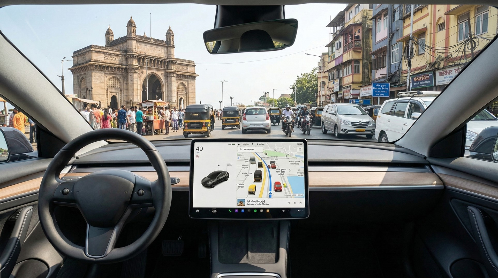

Full Self-Driving
The most advanced autonomous driving system ever built for public roads. Navigate the world end-to-end — from your driveway to your destination — with a level of confidence only billions of real-world miles can teach.
Full Self-Driving features are subject to regulatory approval and regional availability. Always maintain situational awareness. Feature activation depends on real-world safety validation.
The Evolution is Here
Svashasan Pilot (Full Self-Driving) is trained on billions of anonymised driving miles, edge cases, rare scenarios, and everything in between. It doesn't just follow the road — it understands it. Every intersection, every merging truck, every ambiguous pedestrian. Handled.

From the moment you enter your destination, Svashasan Pilot takes the wheel. It handles traffic lights, roundabouts, unprotected left turns, and pedestrian crossings — all with the same calm consistency, whether it's rush hour or a quiet Sunday morning.
Judges oncoming traffic speed and gap size with sub-second precision.
Reads lights, yield signs, and temporary construction signals reliably.
Adapts to road closures, blocked lanes, and unexpected obstacles in real time.

Step out of the mall, tap the app, and watch your vehicle navigate the parking lot on its own. Smart Summon threads through tight spaces, yields to pedestrians, and arrives at your exact location — rain, crowded carpark or otherwise.
Learn about Smart Summon
Parallel or perpendicular, tight or wide — Autopark scans the environment and maneuvers your vehicle into any viable spot with smooth, deliberate control. No frustration, no scraped bumpers, no circling the block twice.
Parallel Parking
Tight urban spots, handled with millimeter accuracy.
Perpendicular Parking
Mall lots, garages and driveways — no sweat.
By the Numbers
0
Billion Miles
Accumulated by our fleet in real-world conditions
0×
Safer
Compared to average human-driven interventions
0%
OTA Coverage
Every improvement delivered wirelessly overnight
SCAN ACTIVE
Cameras don't blink, get tired, or glance at a notification. Svashasan Pilot processes a full hemisphere of visual data sixty times per second — spotting the cyclist in the blind spot, the jaywalker stepping off the curb, the brake light two cars ahead. Every second, every drive.
Over-the-air updates mean every Svashasan vehicle gets smarter with each passing week. The improvement never stops.
View our Safety ReportFleet Learning
The rarest driving edge cases — the kind a human might encounter once in a lifetime — our fleet collectively experiences thousands of times every day. That data feeds directly back into Svashasan Pilot, sharpening its responses to situations that haven't even happened to you yet.
Debris on highway, sudden swerves, emergency vehicle approaches.
Rain, fog, glare, night-time and low-visibility scenarios.
Model improvements deployed overnight via OTA — no service visit required.
What's Next
Full Self-Driving (Supervised) is a significant step. But it's a waypoint on a longer journey toward a world where every Svashasan vehicle can navigate entirely on its own — freeing you completely.
Handles all major driving tasks with active driver supervision. Available now.
End-to-end driving across city streets and highways. Supervised, but dramatically more capable.
True door-to-door autonomy. No supervision required. The future we're building toward.
Schedule a demo drive and sit in the driver's seat while Svashasan Pilot navigates your world. No commitment required — just the future of driving, available today.
Full Self-Driving features require regulatory approval and vary by region. Driver supervision is required at all times. Feature availability and pricing subject to change.